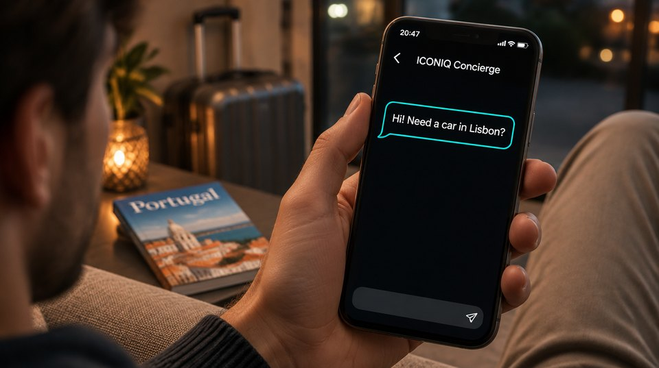
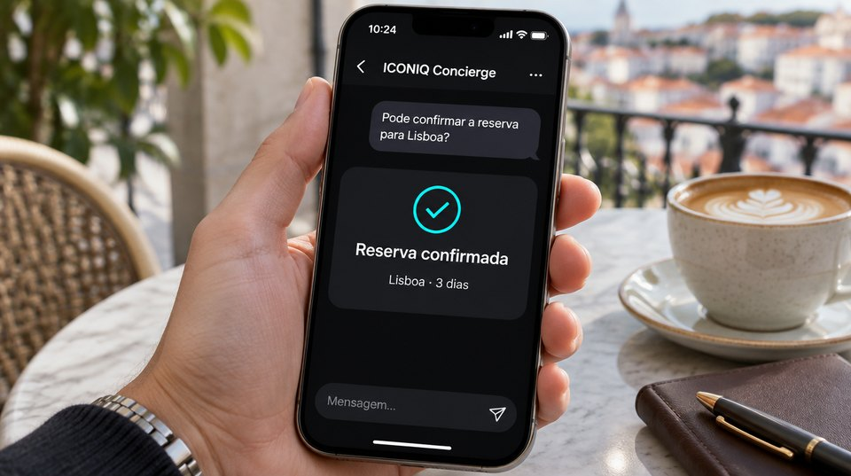
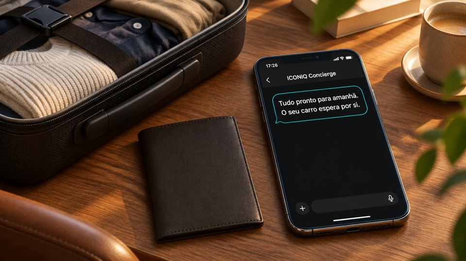
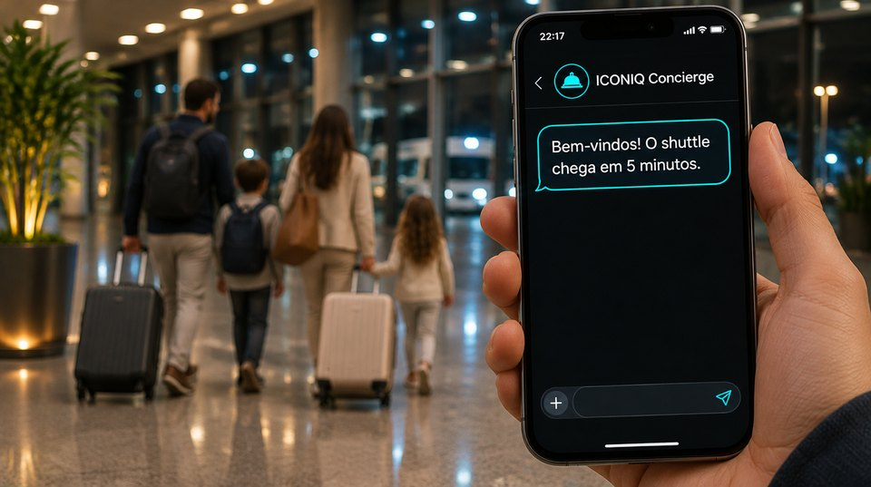
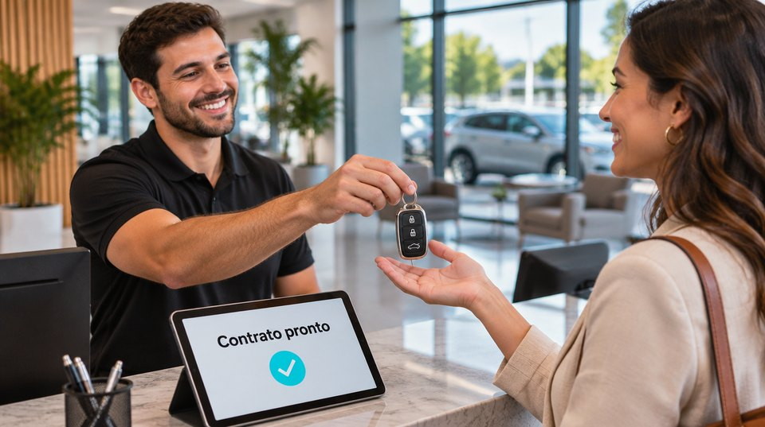
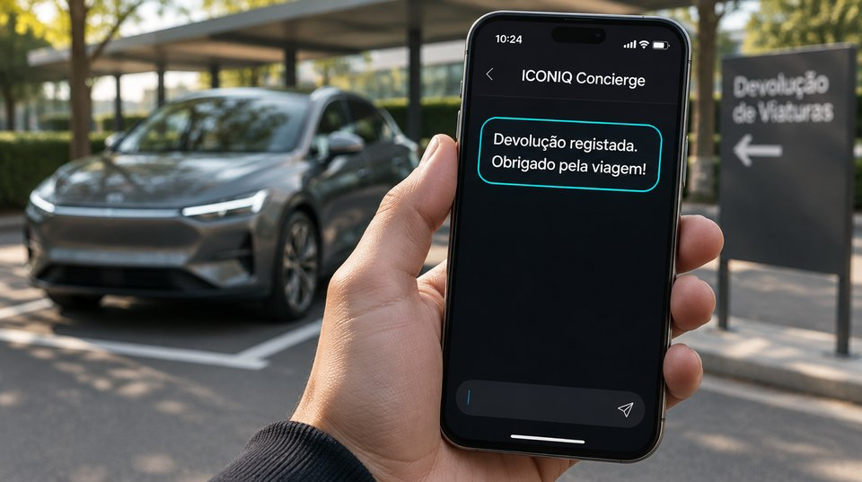
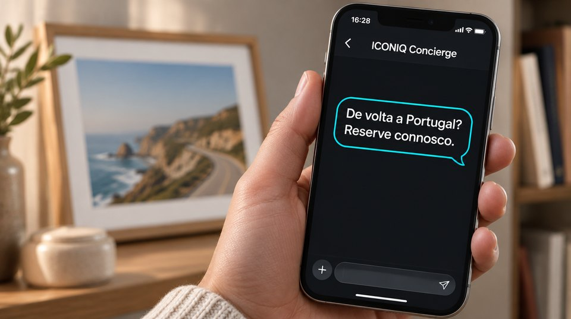
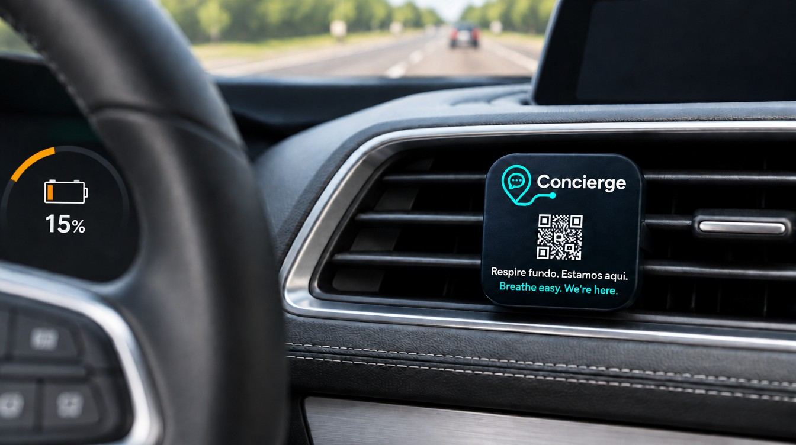
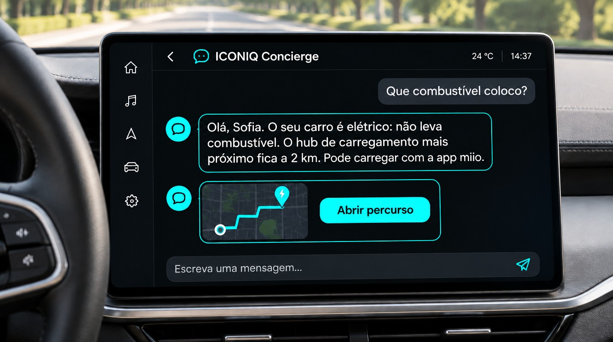

1 · Problema
Às 23:40, o cliente não tem a quem perguntar.
Quando a resposta demora, o cliente fica sozinho no pior momento da viagem. E a ICONIQ arrisca perder o cliente e a avaliação.
Cenário ilustrativo O vídeo conta uma história construída a partir de uma persona. Não é um caso real da ICONIQ.
A seguir · A ICONIQ em 23 segundos
Mobilidade em Portugal e Espanha · duas marcas, ICONIQ e AutoUnion Car Rental · Lisboa, Porto, Faro e Barcelona. Imagens ilustrativas.
Contactos por dia
≈ 40
Estimativa da gestão
Atraso nas respostas
até 24 h
Experiência negativa: risco de perder clientes e de avaliações menos positivas. Estimativa da gestão
Porque é importante
3,2%
dos clientes de 2025 repetiram a experiência: 292 em 9.043. Observado
Os turistas voltam a Portugal. Ainda não voltam a nós.
66%dos visitantes de Portugal são repetentes, segundo o Turismo de Portugal.
3,2%Na ICONIQ, só 3,2% dos clientes repetem.
O cliente regressa ao país, mas não tem razão para nos procurar outra vez:
é esse o espaço que o Concierge quer ocupar.
Fonte: Turismo de Portugal e MINDHAUS, Travel Sentiment Monitor, 3.ª vaga, Junho de 2026 (divulgado pela Publituris a 22/06/2026). Os dois números não medem o mesmo: um é sobre o destino, o outro sobre a nossa empresa.
2 · A proposta · 21 de Novembro de 2026
Plug&Play para o cliente. Decisão humana onde importa.
O ICONIQ Concierge é um integrador focado na experiência do cliente: junta os canais de interacção com os clientes, os sistemas e os recursos da ICONIQ.
Porque agora: manter um crescimento acima de 50% sem aumentar a estrutura só é possível com ferramentas que agilizem as operações e mantenham o nível de serviço, o NPS e as avaliações.
A decisão que pedimos
28.000 €
de investimento inicial, para efectivar o piloto e medir o resultado com um grupo de controlo. É a fase 1. A fase 2 mantém o serviço e abre a jornada (pagamentos, novos canais, canal corporate e integrações): em média 4.000 € por mês (48.000 € em 12 meses), e só avança depois de validada.
3 · Números e oportunidade
Crescemos mais de 50%. A estrutura não pode crescer ao mesmo ritmo.
Crescimento acelerado
O modelo não pode depender de um aumento proporcional de recursos: torna a empresa pesada e condiciona a escala do negócio.
Sazonalidade
Obriga a ajustes muito severos na organização. Solução: uma ferramenta que responde com a mesma eficiência, seja qual for o volume ou a época.
NPS diferente por estação
Hoje depende dos recursos de cada estação. Solução: estandardizar o processo.
Contratos abertos
16.449
Janeiro a Outubro de 2026.
Receita total
4,63 M€
Inclui 570.945 € de extras. Apenas 5 em cada 100 contratos tiveram um upgrade activado com receita (747 em 16.297 fechados).
Direct Bookings
3,7%
605 contratos fora de brokers e intermediários.
NPS Portugal
74,9
2.137 respostas.
Contratos abertos por mês, 2026
O pico vai de Julho a Setembro: é quando mais clientes escrevem ao mesmo tempo.
NPS por estação
O serviço não é igual em todo o lado.
Lisboa é a estação mais baixa. É lá que propomos medir, com grupo de controlo.
Contratos
+51,7%
Julho a Outubro, 2026 contra 2025.
Net rental
+29,1%
O net rental por contrato desceu de 252 € para 215 €, menos 14,9%.
Vendas extra
+119,4%
Trazem rentabilidade adicional. O objectivo é libertar as pessoas para criar este valor.
Porque é que os contratos sobem 51,7% e o net rental só 29,1%? Porque a receita por dia (RPD) e a receita por aluguer (RPR) desceram. O crescimento foi feito em volume, com esmagamento de margem. Por isso a meta para 2027 é crescer em margem, e não só em contratos.
4 · Concierge integrador
Concierge integrador: canais, sistemas e equipas.
Integra os canais de comunicação e de interacção com o cliente, os sistemas internos e as equipas. O foco é a jornada do cliente: uma abordagem centrada no cliente.
Canais
Onde o cliente comunica e interage: WhatsApp e site.
Sistemas internos
O que já temos: BOTA e WheelSys, com frota, preços e disponibilidade em tempo real.
Equipas
Os departamentos da ICONIQ, com o contexto do pedido.
A jornada do cliente, passo a passo

O cliente procura informação. Diferenciamo-nos pela confiança e pelas experiências anteriores.

O processo de conversão. Já em produção com o BOTA: da descoberta à reserva, pelo WhatsApp.

Pré-check-in: identificação, documentos e instruções antes da chegada.

Orientação e recolha pelo shuttle, à hora que for.

Aconselhamento, detalhes e contrato. A equipa entrega a chave.
Perguntas frequentes e apoio a problemas ou questões de viagem.

Check-out e informação contratual, sem filas.

Avaliações, relacionamento e o convite para voltar.
Imagens ilustrativas, geradas por IA. Hoje está em produção a reserva.
5 · A IA, as pessoas e as decisões
A IA, as pessoas e as decisões.
A IA resolve o que é rotina, a qualquer hora e em qualquer língua. Uma avaliação de risco identificou quatro pontos críticos onde tem de existir sempre decisão humana.
Quatro pontos críticos, sempre com decisão humana
- Danos
- Litígios
- Pagamentos
- Alterações sensíveis
Três riscos acompanhados
- Uma resposta errada
- Um contacto comercial indevido
- A exposição de dados
Avaliação periódica e regular para os detectar. Cada um com responsáveis, alertas e a possibilidade de suspender.
Limites e metas
- Pelo menos 95% de respostas correctas
- Zero falhas críticas
- Cada departamento valida as suas respostas
- Check-in com documentos só após revisão de protecção de dados
As pessoas: como preparamos as equipas
A tecnologia é a parte menor da mudança. As equipas passam a fazer outras tarefas e a usar uma ferramenta nova, ao mesmo tempo. Por isso a adopção tem um plano próprio.
1
Ninguém é dispensado
O objectivo é ampliar as pessoas. O tempo libertado vai para o cliente no balcão e para as vendas extra.
2
Champions por estação
Em cada estação, uma pessoa da equipa experimenta primeiro, dá feedback e ajuda os colegas.
3
Formação antes de cada passo
Cada momento da jornada só abre depois de a equipa estar formada e de o departamento validar as respostas.
4
Ouvir e ajustar
Feedback regular das equipas durante o piloto, com a adopção medida a par dos resultados.
6 · Análise financeira
Investir em tecnologia, não em estrutura.
Para atingir as metas, ou parte delas, sem a ferramenta teríamos de criar uma estrutura de apoio ao cliente. A ferramenta mantém o nível de serviço sem imputar esse custo em pessoas.
Caminho 1 · Mais estrutura
Criar uma equipa de customer support
- 25.500 € por ano, por cada pessoa a mais
- Custo fixo o ano inteiro, num negócio sazonal
- Cada pessoa cobre um turno, numa estação
Custo fixo. Procura sazonal.
Caminho 2 A nossa proposta
Investir na ferramenta
- Responde igual em Agosto e em Janeiro
- Três estações, vários idiomas, todas as horas
- As pessoas ficam para o cliente, não para a rotina
A tecnologia escala com a época. A estrutura não.
O investimento em tecnologia
Fase 1 · O que pedimos
28.000 €
Investimento inicial, uma vez, para efectivar o piloto.
Fase 2 · Só depois de validada
4.000 €
por mês, em média (48.000 € em 12 meses), para manter o serviço e abrir a jornada: pagamentos, novos canais, canal corporate e integrações.
Total em 12 meses
76.000 €
O custo de três pessoas durante um ano. A ferramenta serve as três estações, a todas as horas.
Crescer em margem, com as mesmas pessoas, focadas no cliente.
Não imputamos custos em estrutura. Investimos na tecnologia que mantém o nível de serviço, em qualquer época do ano.
O alvo: metas para 2027, face a 2026
Clientes que repetem
10%
Hoje 3,2%. No destino Portugal, 66% dos visitantes são repetentes.
Margem
+5%
Crescimento global com aumento de margem.
Taxa de ocupação
+10%
Em média, em todas as épocas do ano.
Frota
+5%
Mais utilização, não muito mais carros.
Contratos
até +15%
No máximo. Crescer em valor, não só em volume.
Metas definidas pela gestão.
Retorno do investimento esperado · cenário conservador
Com um aumento global de 15% na facturação, o Concierge contribui por três vias: clientes que repetem, venda incremental e notoriedade.
ROI anual esperado
+105%
98.405 € de retorno para 48.000 € de custo, por ano.
Saldo por ano
+50.405 €
Investimento inicial recuperado em
7 meses
| De onde vem o retorno | Facturação a mais | Retorno (margem) |
|---|---|---|
| 1 · Clientes que repetemDe 3,2% para 10%: mais 704 contratos por ano. | 191.112 € | 57.334 € |
| 2 · Venda incremental com ajuda do ConciergeEquipa mais focada no cliente e na venda: extras de 50 para 53 por 100 contratos, mais 627 por ano. | 43.876 € | 24.132 € |
| 3 · Notoriedade: NPS e avaliaçõesMelhor NPS (Lisboa está em 61,9) e melhores reviews: 1 em cada 10 contratos novos, 208 por ano. | 56.465 € | 16.939 € |
| Retorno total por anoSoma das três alavancas. | 291.453 € | 98.405 € |
O que falta provar: o retorno depende de mais clientes a repetir, de mais venda incremental e de melhor NPS e avaliações. Por isso pedimos só a fase 1 e medimos antes de avançar.
7 · Análise técnica
Redesenhamos o processo, sobre os sistemas que já existem.
Não é fazer o mesmo mais depressa. A resposta ao cliente deixa de depender de quem está no balcão e a essa hora: passa a ser um processo único, que começa na conversa e só chega à equipa quando é preciso decidir.
O que a ferramenta faz
Agiliza
os processos: a resposta deixa de esperar por quem está no balcão.
Harmoniza
o serviço: o mesmo processo em Lisboa, no Porto e em Faro.
Foca
as pessoas no nível de serviço: no cliente à frente delas e nas vendas extra.
Como funciona
código QR no carro e canal corporate
O BOTA consulta o WheelSys via API. O WheelSys continua a ser a fonte dos preços e da disponibilidade. As excepções seguem para o departamento responsável.
Ligação à Targa Telematics
Telemática. Depende do acesso à API, já pedido.
Gateways de pagamento
Para o cliente pagar dentro da conversa.
Parceiros e directório
Integração com a seguradora e a assistência em viagem, e um directório de assistência e manutenção.
8 · Pedido de aprovação
Aprovar o piloto. Validar a segunda fase com resultados.
Não pedimos a aprovação de um plano fechado. Pedimos o investimento para efectivar o piloto e as condições para decidir, com dados, se a segunda fase avança.
Já feito · Observado
O que já funciona
- BOTA ligado ao WheelSys
- Mais de 250 respostas em produção
- Contextos postos à prova por clientes reais
- Primeira reserva real
Fase 1 · O que pedimos para aprovar
Efectivar o piloto
- Alargar os contextos a novas áreas
- Fechar as políticas
- Check-in e formação das equipas
- Medir com grupo de controlo em Lisboa
Fase 2 · Só depois de validada
Abrir a jornada
- Pagamentos
- Canais à medida: Instagram, Telegram, voz e e-mail
- Canal corporate
- Repositório de manutenção
- Seguradora por API e telemática (Targa Telematics)
Como analisámos os dados e como vamos medir
Dados
Análise e estatística
- Contratos, receita, extras e NPS por estação
- Sazonalidade e comparação homóloga
Estratégia
Escolha e contas
- Modelo de negócio e seis oportunidades
- Cenários e gestão de risco
Linguagem natural
Conversa com o cliente
- Modelos de linguagem e engenharia de prompts
- Respostas na língua do cliente
Governação
Implementação controlada
- Segurança e supervisão humana
- Formação e gestão da mudança
A nossa visão da jornada futura


Cenário ilustrativo, com imagens geradas por IA. Depende das integrações propostas: contrato no WheelSys, telemática da Targa Telematics e carregamento com a miio. O código QR é decorativo.
Repetição, hoje
3,2%
Indicador 1
Direct Bookings, hoje
3,7%
Indicador 2
Margem que isto acrescenta
A medir
Indicador 3
E se, daqui a 12 meses, tiver corrido mal?
Risco 1
A repetição e a conversão não sobem
Resposta: o grupo de controlo mostra-o ao trimestre. A fase 2 não avança e o investimento fica limitado à fase 1.
Risco 2
Os brokers reagem mal
Resposta: preço directo nunca abaixo do broker, e o Concierge serve também os clientes que eles nos trazem.
Risco 3
As equipas não adoptam
Resposta: champions por estação, formação antes de cada passo e adopção medida durante o piloto.
- Aprovar a fase 1: 28.000 €, para efectivar o piloto
- Medir com grupo de controlo e rever os resultados por trimestre
- Decidir a fase 2 só com resultados validados
As pessoas mantêm a humanização e ampliam a relação com o cliente.
Fecho com voz: «A viagem acaba. A relação continua. A inteligência artificial amplia a capacidade. As pessoas criam confiança. A relação faz o cliente voltar. Concierge, by ICONIQ. Don’t rent a car. Use a car.»